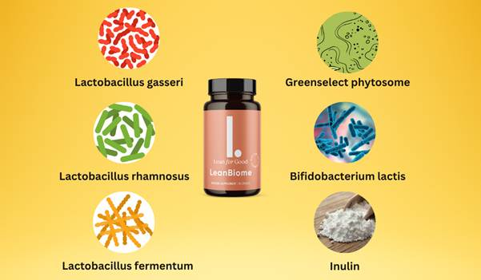

Hi, my name is Jessica and I’m a 42-year-old mom of two. Like many women, I struggled with my weight for years. I tried keto, intermittent fasting, even expensive weight-loss clinics — nothing gave me lasting results.
Then I found out something shocking: our gut bacteria controls more than we think — cravings, metabolism, even mood. And I was completely out of balance.
I came across LeanBiome in a weight loss forum. It’s a probiotic supplement designed to restore your gut balance, helping you burn fat, reduce cravings, and feel energetic again. I was skeptical — but desperate.
I started taking it every morning before breakfast. Within 2 weeks I felt lighter. In 6 weeks, I had lost over 18 pounds. And the best part? No crash diets, no extreme workouts. I just felt… normal again.